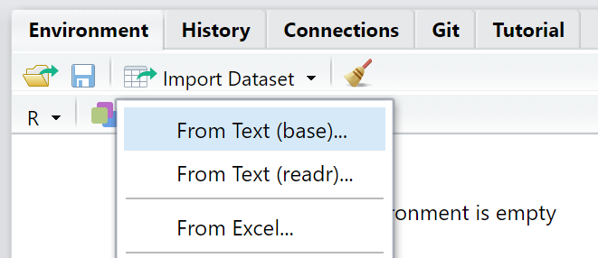
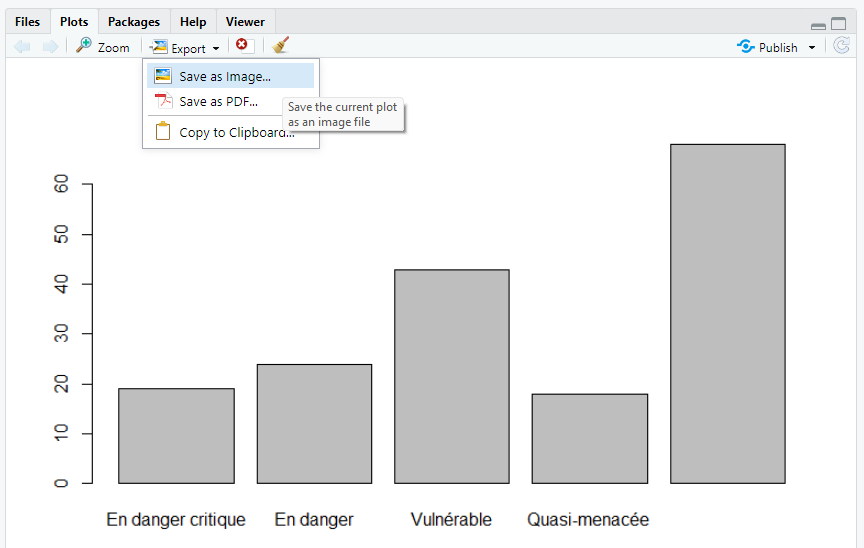
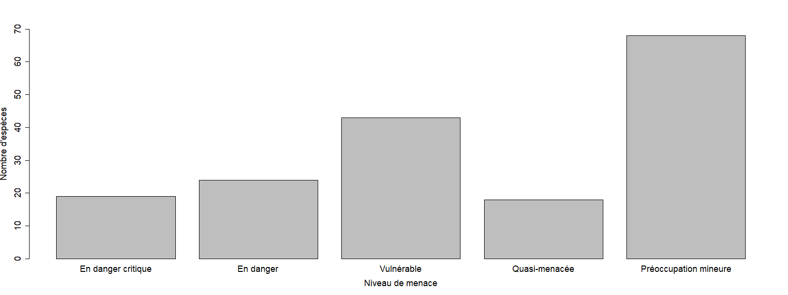

Ce tutoriel est adapté de Getting started with R and RStudio du site Our Coding Club.

Introduction
Les objectifs de ce tutoriel sont les suivants :
- Comprendre ce qu’est R (et RStudio)
- Prendre la bonne habitude de travailler avec des scripts
- Apprendre à importer des données dans R
- Apprendre à manipuler des objets (vecteurs et data frames)
- Créer un graphique basique
Voici les étapes que nous allons suivre pour y parvenir :
- Télécharger R et RStudio
- Importer et vérifier les données
- Compter le nombre d’espèces menacées
- Créer un vecteur et le représenter
- Créer un data frame et le représenter
- Défi
- Glossaire
Qu’est-ce que R?
R est un langage de programmation statistique qui a rapidement gagné en popularité dans de nombreux domaines scientifiques. Il a été développé par Ross Ihaka et Robert Gentleman comme implémentation libre du langage de programmation S.
R désigne également le logiciel qui utilise ce langage pour des calculs statistiques (et tout un tas d’autres applications !). Il dispose d’une communauté en ligne très active ainsi que d’extensions pour presque tous les domaines et applications possibles et imaginables.
Contrairement à d’autres logiciels de statistiques comme Minitab ou SPSS, R peut être exécuté entièrement en ligne de commande et ne nécessite pas d’interface graphique, ce qui lui confère une grande flexibilité.
Voici quelques avantages de R :
- C’est un outil libre et open source (tout le monde peut utiliser le code et voir comment il fonctionne)
- C’est un langage de programmation plutôt qu’une interface graphique, ce qui permet à l’utilisateur de sauvegarder facilement des scripts sous forme de texte pour les ré-utiliser ou les partager
- Beaucoup de personnes l’utilisent dans beaucoup de domaines différents - il est rare d’être confronté à un problème qui n’a jamais été résolu !
Télécharger R et RStudio
La plupart des utilisateurs interagissent avec R à l’aide d’une interface graphique, dont la plus connue est RStudio. RStudio permet d’avoir accès dans une seule fenêtre à vos scripts, à vos données, à vos graphiques, à vos résultats, ainsi qu’à de l’aide.
- Téléchargez R sur le site du CRAN (The Comprehensive R Archive Network)
- Téléchargez RStudio (“free open source desktop version”)
- Sur Mac, vous aurez également besoin de XQuartz
Ouvrez RStudio, puis cliquez sur “File / New File / R script”

Vous verrez une fenêtre comme celle ci-dessus, avec quatre panneaux :
1) La console : vous pouvez y taper du code et l’exécuter avec Entrée.
2) Le script : vous pouvez - et c’est préférable - y taper du code. Pour l’exécuter, placez-vous à la fin de la ligne et utilisez la combinaison de touches Ctrl + R (Windows) ou Cmd + Entrée (Mac).
3) L’environnement : aperçu de votre espace de travail (données importées, objets créés, fonctions définies, …).
4) Fichiers / Graphiques / Packages / Aide : permet de naviguer dans vos dossiers, de visualiser vos graphiques, de voir quels packages sont installés et chargés, et d’obtenir de l’aide.
A propos des scripts : gardez bien à l’esprit que le code tapé directement dans la console ne sera pas sauvegardé par R : il disparaît une fois exécuté (vous pouvez toutefois accéder aux dernières commandes à l’aide de la touche Flèche du haut de votre clavier). L’utilisation d’un script pour taper votre code vous permet d’en garder une trace. C’est un peu comme quand vous rédigez un document dans Word : vous pouvez sauvegarder votre progression pour reprendre là où vous en étiez, ou faire des modifications. Lorsque vous tapez du code dans un script, pensez à le sauvegarder régulièrement (Ctrl + S).
Il est fortement recommandé d’ajouter à votre code des commentaires décrivant les étapes. Pour cela, insérez un hashtag (#) devant une ligne de votre script (ou Ctrl + Shift + C). Toutes les lignes qui commencent par un # seront considérées par R comme du texte et non du code, et ne seront pas exécutées.
Ces commentaires apporteront des informations précieuses pour toute personne qui lira votre script (y compris vous-même quand vous reviendrez dessus dans un certain temps !). Comme tout document écrit, les scripts sont plus facilement lisibles quand ils sont bien structurés et clairs.
A propos de l’espace de travail : votre espace de travail contient tout ce que vous utilisez lors d’une session R. En quittant R, vous aurez le choix de sauvegarder ou non cet espace de travail. Il est préférable de ne pas le faire et de démarrer chaque session avec en espace de travail vide.
Téléchargez les données
La meilleure façon d’apprendre un nouveau langage est de le pratiquer. Nous allons analyser une liste d’espèces d’oiseaux menacées en Auvergne (données de 2015 obtenues sur le site de la DREAL). Ces données se trouvent dans un fichier appelé oiseaux.csv.
1) Créez un nouveau dossier sur votre ordinateur : vous allez y télécharger les données, et vous pourrez y sauvegarder votre script et vos graphiques. Choisissez un nom explicite, par exemple codons_01_intro_r
2) Cliquez sur ce lien pour télécharger le fichier oiseaux.csv
3) Cliquez sur “Code” puis “Download ZIP” (voir ci-dessous)

4) Choisissez comme emplacement de sauvegarde le dossier que vous venez de créer
5) Dézippez le dossier
Commencez à écrire votre script
Pour l’instant, vous pouvez noter la date et l’objectif du tutoriel - compter le nombre d’espèces d’oiseaux menacées d’extinction en Auvergne. Vous pouvez copier l’exemple ci-dessous pour le coller et l’éditer dans votre propre script :
# Ateliers codon(s)!
# 01 - Premiers pas avec R
# Lundi 09/05/2022Les lignes suivantes dans votre script servent généralement à charger les packages dont vous aurez besoin pour votre analyse. Un package contient des commandes qui peuvent être chargées dans R pour apporter des fonctionnalités supplémentaires (il existe par exemple des packages pour formater des données ou pour créer des cartes).
Un package doit tout d’abord être téléchargé et installé sur votre ordinateur à l’aide de la commande install.packages("nom-du-package") avant d’être chargé pour être utilisé à l’aide de la commande library(nom-du-package). Un package n’a besoin d’être installé qu’une seule fois, vous pouvez donc le faire directement dans la console plutôt que de sauvegarder la ligne de code dans votre script et d’ainsi le ré-installer à chaque fois que vous exécutez votre script. Nous allons utiliser le package dplyr qui fournit des fonctionnalités supplémentaires pour la manipulation et le formatage de données.
install.packages("dplyr")
library(dplyr)Nous allons maintenant définir notre répertoire de travail - le dossier dans lequel R cherchera les données à importer et sauvegardera les graphiques. C’est dans notre cas le dossier dans lequel nous avons téléchargé les données.
Quand vous aurez à travailler sur des projets plus importants, vous pourrez tout à fait créer un dossier racine (par ex. “nom_du_projet/”), le définir comme répertoire de travail, et créer des sous-dossiers pour organiser les fichiers (par ex. “nom_du_projet/donnees_brutes/”, “nom_du_projet/figures/”, …).
Pour afficher le réperoire de travail, utilisez la commande getwd() (pour get working directory). La commande setwd("nom-du-repertoire-de-travail") (set working directory) permet de définir un nouveau répertoire de travail.
setwd("C:/User/Codons-01-PremiersPasAvecR")
# Remplacez le chemin ci-dessus par le votreImporter et vérifier les données
Pour importer les données dans RStudio, deux options s’offrent à vous :
- Cliquer sur le bouton Import Dataset

Indiquez quel fichier vous souhaitez importer, et RStudio vous proposera un aperçu de vos données. Assurez-vous qu’à côté de Heading vous avez sélectionné Yes (ceci indique à R qu’il doit considérer la première ligne de vos données comme des noms de colonnes). Cliquez enfin sur Import.

Dans la console vous verrez le code utilisé pour importer vos données, y compris le chemin vers votre fichier - il est utile de copier cette ligne de code et de la coller dans votre script, pour que vous sachiez d’où vient votre jeu de données.
Vous remarquerez que le chemin vers votre fichier débute par C:/. Il s’agit du chemin absolu vers le fichier à importer, qui ne tient pas compte du fait que vous avez défini un répertoire de travail. Vous pouvez également utiliser le chemin relatif qui indique l’emplacement du fichier à partir de votre répertoire de travail (voir ci-dessous)
- Utiliser la commande
read.csv(): R fonctionne mieux avec des fichiers.csv(valeurs séparées par des virgules). Si vous travaillez dans Excel, cliquez sur Enregistrer sous et choisissezcsvcomme extension de fichier.
Certains ordinateurs utilisent le point-virgule ; comme séparateur dans les fichiers .csv. Vous pouvez dans ce cas utiliser la fonction read.csv2(), ou préciser dans la fonction read.csv() l’argument sep = ";".
oiseaux <- read.csv("Codons-01-PremiersPasAvecR-main/oiseaux.csv")
# modifiez le chemin vers le fichier si nécessaireA propos des objets : R est langage orienté objet - cela signifie que tout ce que vous importez et créez est stocké dans des objets que vous allez nommer. Ici, nous avons assigné le fichier oiseaux.csv à l’objet oiseaux à l’aide de la flèche <-. Nous aurions tout à fait pu l’appeler mesdonnees ou oiseaux_liste_rouge_auvergne, mais il est préférable de choisir un nom unique, informatif et court. Dans le panneau Environment de RStudio vous pouvez voir les noms de tous les objets actuellement chargés dans R. Assurez-vous que vous voyez bien l’objet oiseaux.
Quand vous importez vos données dans R, il est très probable qu’elles deviennent un objet qu’on appelle un data frame : un tableau contenant des lignes (observations) et des colonnes (variables).
Une des premières choses à faire est de vous assurer que vos données ont été importées sans erreur. Il est recommandé de toujours exécuter ce code dans la console et de vérifier le résultat - voyez-vous des erreurs, est-ce que les nombres/noms ont du sens ? Si vous passiez directement à l’analyse, vous risqueriez de vous rendre compte plus tard que R n’a pas importé vos données correctement et vous devriez recommencer, ou pire, vous pourriez analyser de mauvaises données sans vous en rendre compte. Pour visualiser davantage que les quelques premières lignes, vous pouvez également cliquer sur l’objet dans le panneau Environment, ce qui affichera un tableau dans un nouvel onglet à côté de votre script. Des fichiers peuvent être trop larges pour êtres affichés entirement, gardez donc à l’esprit qu’il peut y avoir des lignes ou des colonnes manquantes.
La commande str(nom.objet) affiche la structure de vos données. Très souvent, les analyses ne se déroulent pas comme prévu car R s’est trompé de type de variable. Imaginez que vos données comportent quatre groupes d’étude appelés “1, 2, 3, 4”. Vous savez pertinnement qu’il s’agit d’une variable catégorique (un facteur), mais R peut considérer qu’il s’agit d’une variable numérique.
La fonction str(oiseaux) nous indique que la variable categorie est une chaîne de caractères (chr). Nous préférerions que R considère cette variable comme étant catégorique - un facteur. Nous allons le préciser en accédant à la colonne concernée à l’aide du signe dollar $ :
La dernière ligne du code ci-dessus permet de transformer la variable categorie en un facteur. La fonction as.factor(oiseaux$categorie) toute seule serait exécutée, mais ne modifierait pas les données stockées dans l’objet oiseaux. Il faut pour cela ré-assigner cette variable transformée en facteur à la variable d’origine. Pour vous assurer que l’opération a bien fonctionné, vous pouvez exécuter à nouveau la fonction class(oiseaux$categorie).
Les fonctions suivantes permettent d’explorer autrement vos données :
Compter le nombre d’espèces menacées
Notre objet oiseaux dresse une liste des espèces d’oiseaux menacées d’extinction en Auvergne, avec différents niveaux de préoccupation.
Nous allons compter le nombre d’espèces pour chaque niveau de préoccupation et créer une visualisation de ce comptage.
Commençons par séparer oiseaux en plusieurs objets, un pour chaque niveau de menace, à l’aide de la fonction filter() du package dplyr.
en_danger_critique <- filter(oiseaux, categorie == "En danger critique")
# Le 1er argument de la fonction est le data frame,
# Le 2e argument est la condition à appliquer au filtreR est sensible à la casse : filter(oiseaux, categorie == "en danger critique") ne fonctionnera pas !
Procédons de la même façon pour chaque catégorie. Si vous avez un doute sur le nom ou l’orthographe d’une des catégories, pensez à la fonction summary(oiseaux$categorie).
Une fois que vous avez créé tous les objets, vous allez pouvoir compter le nombre d’espèces pour chaque catégorie.
Nous allons pour cela imbriquer deux fonctions : unique() (pour identifier chaque espèce) et length() (pour les compter).
Procédez de la même façon pour toutes les catégories. Cette manière de procéder peut vous sembler rébarbative … Nous verrons dans un prochain tutoriel comment procéder de manière plus efficace !
Tapez dans la console le nom d’un des objets que vous venez de créer. Que vous retourne-t-elle ?
Créer un vecteur et le représenter
Nous allons maintenant combiner tous ces objets dans un vecteur - un objet à une dimension (à la différence d’un data frame qui en possède deux).
Nous utilisons pour cela la fonction c() (pour concaténer), ainsi que la fonction names() pour ajouter des étiquettes aux valeurs.
Notes :
- Les espaces avant et après la flèche <- et après la virgule , facilitent la lecture du code
- Faites attention à vérifier que les valeurs du vecteur correspondent bien aux étiquettes - vous ne voudriez pas inverser les espèces “En danger critique” avec les espèces “Quasi-menacées”! L’utilisation d’un script permet de revenir sur le code et de vérifier qu’on ne s’est pas trompé. Une bonne pratique serait de nommer les objets de façon plus explicite, comme nb_en_danger_critique, nb_en_danger, …
- Si vous cliquez à l’aide de la souris après une parenthèse, RStudio surlignera la parenthèse lui correspondant. Les parenthèses manquantes, en particulier quand vous utilisez des fonctions imbriquées comme vous l’avez fait avec length(unique()) sont une des sources de frustration et d’erreur les plus courantes quand vous commencez à coder !
Nous pouvons maintenant visualiser le nombre d’espèces par catégorie à l’aide de la fonction barplot().
Les graphiques s’affichent dans le panneau inférieur droit de RStudio.
barplot(comptage_especes)Et voilà votre premier graphique avec R ! Mais il y a des choses à modifier : il manque des titres aux axes, toutes les étiquettes ne sont pas visibles, et la valeur pour les espèces dans la catégorie “Préoccupation mineure” (n = 68) dépasse la plus grande valeur affichée sur l’axe Y.
Pour savoir comment apporter ces modifications à votre graphique, utilisez la fonction help(barplot) ou ?barplot pour afficher l’aide de la fonction. Survolez le document qui s’affiche et essayez de trouver des solutions.
Nous aimerions également sauvegarder notre graphique. Là encore, vous avez deux options :
- Cliquer sur Export dans le panneau des graphiques : choisissez où sauvegarder le graphique (par défaut dans votre répertoire de travail) et modifiez le nom du fichier pour qu’il soit plus explicite que Rplot01.png. Vous pouvez aussi ajuster les dimensions de la figure.

- Utiliser les fonctions
png()etdev.off()qui servent respectivement à ouvrir et fermer l’outil graphique :

Créer un dataframe et le représenter
Nous avons travaillé jusqu’ici avec des vecteurs, un type d’objet bien adapté quand on manipule une seule série de valeurs à la fois. Dans la pratique, nous manipulons souvent plusieurs variables et plusieurs types de données en même temps - par exemple des valeurs continues et des valeurs catégoriques. Les data frames sont alors mieux adaptés : il s’agit de tableaux de valeurs ayant une structure en deux dimensions, des lignes et des colonnes, chaque colonne pouvant contenir un type différent de données.
Nous pourrions par exemple avoir un tableau de données dont une colonne appelée “Envergure” contient des mesures d’envergures chez différentes espèces d’oiseaux, et une deuxième colonne appelée “Espèce” contient les noms des espèces dont on a mesuré l’envergure.
La matrice est un autre format possible de données : elle peut également contenir plusieurs lignes, mais toutes les variables d’une matrice doivent être du même type et contenir le même nombre d’éléments.
Conseil de bonne pratique : conservez toujours une copie de vos données brutes ! Votre script R vous permet de manipuler et modifier ces données sans toucher aux données brutes. Si vous utilisez des logiciels de retouche photo, c’est un peu la même chose que d’ajouter des couches apportant des modifications à votre cliché sans modifier la photo d’origine. Ceci dit, si vos données brutes nécessitent un long morceau de code pour être analysables, vous pouvez sauvegarder une version nettoyée de vos données brutes pour ne pas avoir à refaire toutes les étapes de nettoyage des données.
Nous allons utiliser deux nouvelles fonctions : data.frame() pour créer notre data frame et write.csv() pour le sauvegarder. Nous allons créer les objets “categories” et “comptage”, transformer l’objet “categories” en facteur, puis rassembler ces deux objets dans un data frame.
# Creer un objet "categories"
categories <- c("En danger critique",
"En danger",
"Vulnerable",
"Quasi-menacee",
"Preoccupation mineure")
# Transformer cet objet en facteur
categories_f <- factor(categories)
# Creer un objet "comptage"
comptage <- c(a, b, c, d, e)
# Creer un data frame avec ces deux vecteurs
especes_menacees <- data.frame(categories_f, comptage)
# Sauvegarder le data frame
write.csv(especes_menacees, file = "especes_menacees.csv")Pour créer un barplot à partir de ce data frame, vous devrez modifier le code utilisé précédemment - il faut en effet préciser quelle variable du data frame vous souhaitez représenter.
png("barplot2.png",
width = 1600, height = 600)
barplot(especes_menacees$comptage,
names.arg = c("En danger critique",
"En danger",
"Vulnerable",
"Quasi-menacee",
"Preoccupation mineure"),
xlab = "Niveau de menace", ylab = "Nombre d'especes",
ylim = c(0, 70),
cex.names = 1.5, cex.axis = 1.5, cex.lab = 1.5)Bilan du tutoriel :
- Vous vous êtes familiarisé avec l’interface RStudio
- Vous savez comment créer et annoter un fichier de script
- Vous pouvez importer vos propres données dans RStudio
- Vous savez comment vérifier et explorer vos données
- Vous pouvez générer des graphiques basiques et les exporter
Défi
Si c’est votre premier contact avec R, ne vous inquiétez pas si vous ne comprenez pas tout, tout de suite. Revenez à tête reposée sur les parties que vous avez trouvées plus difficiles.
Voici un petit défi pour mettre en pratique ce que vous avez vu dans ce tutoriel.
Vous verrez ci-dessous des données (fictives) de mesures d’envergure (en cm) pour quatre espèces différentes d’oiseaux. Essayez de créer un barplot de l’envergure moyenne pour chacune des espèces et sauvegardez-le sur votre ordinateur.
| espece | envergure (cm) |
|---|---|
| Aigle | 195 |
| Chouette | 85 |
| Colibri | 8 |
| Moineau | 24 |
| Aigle | 201 |
| Chouette | 102 |
| Colibri | 9 |
| Moineau | 21 |
| Aigle | 185 |
| Chouette | 91 |
| Colibri | 9 |
| Moineau | 22 |
Solution
Ne regardez pas avant d’avoir essayé ! Il n’existe pas une seule solution possible, plusieurs façons de procéder amèneront au même résultat. Les noms des objets et l’apparence du graphique seront sans doute différents, et cela ne pose aucun problème - du moment que les valeurs elles-mêmes sont correctes.
Show code
# Extraire les envergures pour chaque espece
env_aigle <- c(195, 201, 185)
env_chouette <- c(85, 102, 91)
env_colibri <- c(8, 9, 9)
env_moineau <- c(24, 21, 22)
# Calculer l'envergure moyenne
env_moy_aigle <- mean(env_aigle)
env_moy_chouette <- mean(env_chouette)
env_moy_colibri <- mean(env_colibri)
env_moy_moineau <- mean(env_moineau)
# Rassembler ces valeurs moyennes dans un vecteur
env_moyenne <- c(env_moy_aigle, env_moy_chouette, env_moy_colibri, env_moy_moineau)
# Creer un vecteur avec les noms des especes (attention à l'ordre !)
especes <- c("Aigle", "Chouette", "Colibri", "Moineau")
# Transformer ce vecteur en un facteur
especes_f <- as.factor(especes)
class(especes_f)
# Combiner les deux vecteurs dans un data frame
envergure <- data.frame(especes_f, env_moyenne)
# Sauvegarder le barplot dans un fichier
png("barplot_envergure.png",
width = 1600, height = 600)
barplot(envergure$env_moyenne,
names.arg = envergure$especes_f,
xlab = "Espèces", ylab = "Envergure moyenne",
ylim = c(0, 200),
cex.names = 1.5, cex.axis = 1.5, cex.lab = 1.5,
col = "gold") # modifier la couleur des barres
dev.off()Glossaire
Voici quelques termes importants vus dans ce tutoriel :
argument : élément d’une fonction, essentiel ou optionnel, qui précise ou modifie la façon dont la fonction est exécutée. Par exemple, il peut s’agir du chemin vers un fichier qui sera importé, ou de l’emplacement où sera sauvegardé un fichier :
file = "chemin-vers-le-fichier. Il peut aussi modifier les couleurs d’un graphique :col = "blue". Vous pouvez trouver une liste des arguments d’une fonction à l’aide de la commande?nom-de-la-fonction.
classe : le type de données contenu dans une variable : habituellement des charactères (texte/mots), des nombres entiers ou relatifs, ou des facteurs (des valeurs de groupement, utiles quand vos données contiennent de multiples observations issues de différents sites ou traitements).
commande : un morceau de code qui exécute une action, contient généralement une ou plusieurs fonctions. Vous pouvez exécuter une commande en cliquant sur “Run” ou grâce aux raccourcis clavier comme
Cmd + Entrée,Ctrl + EntréeouCtrl + R.commentaire : un morceau de texte dans un script qui débute par un hashtag
#et qui n’est pas lu comme une commande. Les commentaires rendent le code plus facilement lisible pour d’autres personnes : utilisez-les pour créer des sections dans votre script et pour annoter chaque étape de votre analyse.console : la fenêtre dans laquelle vous pouvez taper du code directement en ligne de commande (
2+2puisEntréeretournera4), et où les résultats des commandes seront affichés.data frame : un type d’objet R composé de nombreuses lignes et colonnes (pensez à une feuille Excel). Généralement les colonnes contiennent différentes variables (par exemple âge, couleur, poids, envergure), et les lignes les observations de ces variables (par exemple oiseau1, oiseau2, oiseau3).
espace de travail : c’est votre environnement de travail virtuel, il contient toutes les fonctions des packages que vous avez chargés, les objets que vous avez créés, et ainsi de suite. Il est préférable de démarrer une session de travail avec un espace de travail vide.
fichier csv : un type de fichier couramment utilisé pour importer des données dans R, où les valeurs des différentes variables sont compressées (une chaîne, ou une ligne de valeurs par ligne) et séparées seulement par des virgules (indiquant les colonnes). R peut aussi lire des fichiers Excel (.xlsx), mais cela n’est pas recommandé car il est difficile d’éviter les erreurs de formatage.
fonction : du code qui exécute une action, c’est-à-dire tout ce que vous faites dans R. Une fonction prend une entrée, la modifie d’une façon ou d’une autre, et retourne une sortie (un objet, un résultat de test, un fichier, un graphique). Il existe des fonctions pour importer, convertir et manipuler des données, pour effectuer des calculs spécifiques (essayez de deviner ce que retourneraient les fonctions
min(10, 15, 5)etmax(10, 15, 5)), générer des graphiques, et bien davantage.objet : les briques de construction de R. Si R était un langage parlé, les fonctions seraient les verbes (actions) et les objets les noms (les sujets ou les objets de ces actions). On fait appel à un objet par son nom sans guillemets. Les objets permettent de stocker des données, et prennent différentes formes. Les objets les plus courants sont les data frames et les vecteurs, mais il en existe d’autres, comme les listes et les matrices.
package : un ensemble de fonctions qui apportent des fonctionnalités supplémentaires à R. De nombreux packages sont inclus dans R, d’autres peuvent être téléchargés pour des besoins spécifiques.
répertoire de travail : le dossier sur votre ordinateur associé à votre session R actuelle, contenant les données que vous allez importer et où vous sauvegarderez des fichiers. Vous pouvez le définir au début de votre session à l’aide de la fonction
setwd().script : comme un éditeur de texte, un script vous permet d’écrire votre code et de le sauvegarder pour des usages futurs. Il contient un mélange de code et de commentaires et est sauvegardé comme un simple fichier texte que vous pouvez aisément partager pour que n’importe qui puisse reproduire votre travail.
vecteur : un type d’objet R qui ne contient qu’une seule dimension : il stocke une ligne de valeurs qui peuvent être des caractères, des nombres, etc.